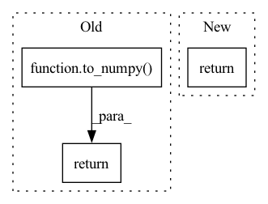

Pattern ID :26901

Before Change
users = to_numpy(log, "user_idx")
items = to_numpy(log, "item_idx")
relevance = to_numpy(log, "relevance")
return csr_matrix((relevance, (items, users)))
def to_numpy(log: DataFrame, col: str) -> np.ndarray:
After Change
[0, 2]], dtype=int64)
df = log.select("user_idx", "item_idx", "relevance").toPandas()
return csr_matrix((df.relevance, (df.item_idx, df.user_idx)))
In pattern: SUPERPATTERN
Frequency: 3
Non-data size: 3
Instances
Fragment ID: 80247915
Project Name: sb-ai-lab/replay
Commit Name: d64dec49c52992118860248b7aba033c903c12b9
Time: 2020-04-30
Author: yytamm@sberbank.ru
File Name: sponge_bob_magic/utils.py
M Class Name: AnonimousClass
N Class Name: AnonimousClass
M Method Name: to_csr(1)
N Method Name: to_csr(1)
M Parent Class:
N Parent Class:
M File Name: sponge_bob_magic/utils.py
N File Name: sponge_bob_magic/utils.py
M Start Line: 277
M End Line: 280
N Start Line: 277
N End Line: 278
'>
Before Change
[0, 0],
[0, 2]], dtype=int64)
users = to_numpy(log, "user_idx")
items = to_numpy(log, "item_idx")
relevance = to_numpy(log, "relevance")
return csr_matrix((relevance, (items, users)))
def to_numpy(log: DataFrame, col: str) -> np.ndarray:
After Change
[0, 2]], dtype=int64)
df = log.select("user_idx", "item_idx", "relevance").toPandas()
return csr_matrix((df.relevance, (df.item_idx, df.user_idx)))
'>
Fragment ID: 80247916
Project Name: sb-ai-lab/replay
Commit Name: 11d2dcf0cc56cfcbaee2c35e801681acf6757d9a
Time: 2020-05-07
Author: yytamm@sberbank.ru
File Name: sponge_bob_magic/utils.py
M Class Name: AnonimousClass
N Class Name: AnonimousClass
M Method Name: to_csr(1)
N Method Name: to_csr(1)
M Parent Class:
N Parent Class:
M File Name: sponge_bob_magic/utils.py
N File Name: sponge_bob_magic/utils.py
M Start Line: 277
M End Line: 280
N Start Line: 277
N End Line: 278
'>
Before Change
elif isinstance(x, np.ndarray):
a = x
elif isinstance(x, tuple):
return tuple(to_numpy(xx) for xx in x)
else:
a = np.array(x)
return a
After Change
def to_numpy(x):
return map_r(x, lambda x: x.detach().numpy() if x is not None else None)
def to_gpu(data):
'>
Fragment ID: 80247917
Project Name: dena/handyrl
Commit Name: 1c3139f219a248815de9b4ee7cd5c02200caf9b2
Time: 2020-06-25
Author: a.a.b.a.b.c.a.b.c.d.abcd1234@gmail.com
File Name: model.py
M Class Name: AnonimousClass
N Class Name: AnonimousClass
M Method Name: to_numpy(1)
N Method Name: to_numpy(1)
M Parent Class:
N Parent Class:
M File Name: model.py
N File Name: model.py
M Start Line: 33
M End Line: 43
N Start Line: 39
N End Line: 39